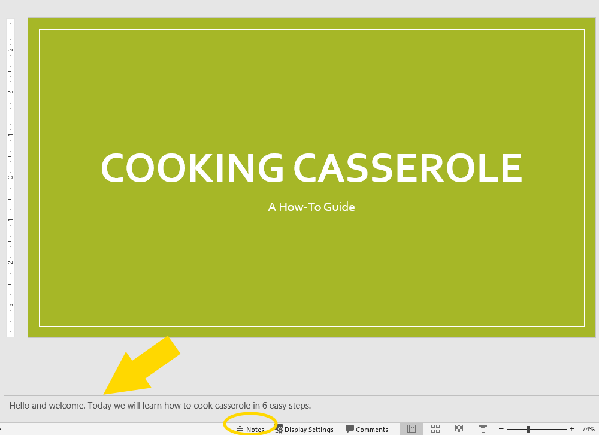
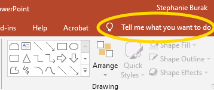
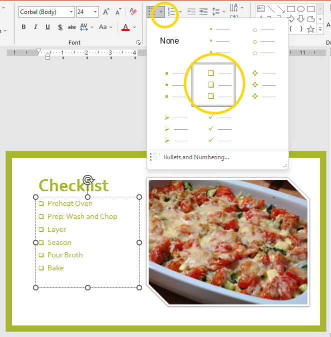

Extend Yourself - PowerPoint: How to Step-by-Step
 Add a Script to the Notes Section
Add a Script to the Notes Section
Write a script for your presentation and learn how to add it into the Notes section.
You can find a tutorial on the Microsoft Support website.

Add a Video
Make a video recording of yourself doing the task to add into the PowerPoint.
PowerPoint allows you to add videos from your computer, YouTube, or other websites. You can even add, format, and record videos in PowerPoint. Use the search bar to find instructions that meet your needs.

Share a Checklist
Checklists can help people make sure all steps are completed. Create a checklist of steps (in PowerPoint) for people to use to do your task.
To make a checklist, list your steps. But instead of using numbers to make your list, go to the Paragraph section and select the down arrow next to the Bullet icon. You will see the option for checkboxes. Now, if you were to print your presentation, you would have a handy checklist to share.
